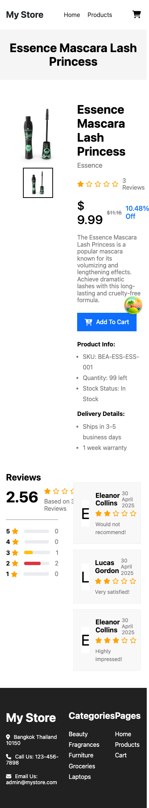

บทเรียน 17 · สร้างแอปทีละหน้า (Building Page by Page)
หน้า Product Detail
Product Detail Page
หน้า Category จบแล้วพร้อม pagination เต็มรูปแบบ และมี hook เล็ก ๆ ตัวหนึ่งที่สร้างทิ้งไว้ตั้งแต่บทที่แล้วยังไม่ได้ใช้เต็มที่ — useProductRoute มี goToProductDetails ที่คลิกการ์ดสินค้าแล้วพาไป /products/:id ได้จริงแล้ว แต่ปลายทางนั้นยังไม่มีอะไรรออยู่เลย บทนี้เราจะสร้างปลายทางนั้นให้จริง แล้ววน The Loop (🎯 → 📝 → 🤖 → 🔍 → 🔧) แบบเต็มรูปแบบอีกครั้งเป็นครั้งที่สาม เหมือนบทที่ 14 และ 16 ที่ผ่านมา
🎯 เป้าหมาย
ดู screenshot หน้า Product Detail ของแอปต้นแบบ — สินค้าที่ใช้เป็นตัวอย่างคือ Essence Mascara Lash Princess ตัวเดียวกับที่เห็นเป็นการ์ดแรกในหมวด Beauty มาตั้งแต่บทที่ 14
![ภาพหน้าจอหน้า Product Detail ของแอปต้นแบบ My Store บนจอเดสก์ท็อป สินค้า Essence Mascara Lash Princess แถบเทาด้านบนแสดงชื่อสินค้ากลางจอ ไอคอนตะกร้าที่ Header ไม่มี badge ตัวเลขติดอยู่เลย ฝั่งซ้ายมีรูปสินค้าหลักกับ thumbnail หนึ่งรูปด้านล่าง ฝั่งขวาแสดงชื่อสินค้า แบรนด์ Essence ดาวเต็มหนึ่งดวงกับดาวว่างสี่ดวงถัดจากคำว่า 3 Reviews ราคา $9.99 พร้อมราคาก่อนลด $11.16 ขีดฆ่าและ 10.48% Off คำอธิบายสินค้า ปุ่ม Add To Cart สีน้ำเงิน รายการ Product Info (SKU, Quantity, Stock Status) และ Delivery Details ด้านล่างสุดมี section Reviews แสดงคะแนนเฉลี่ย 2.56 พร้อมดาวเต็มดวงเดียวแบบเดียวกับด้านบน แถบ breakdown ดาว 5 ถึง 1 (3 ดาว: 1 รายการ, 2 ดาว: 2 รายการ, ที่เหลือ 0) และการ์ดรีวิว 3 ใบ](images/product_desktop.png)
เทียบกับเวอร์ชันมือถือด้วยตามธรรมเนียม

สังเกตตัวเลขดาวสองจุดในภาพเดสก์ท็อปให้ดี — ทั้งแถวบนสุด (ถัดจาก "3 Reviews") และแถว "2.56" ในกล่อง Reviews ต่างก็แสดงดาวเต็มแค่ดวงเดียวเหมือนกันทั้งคู่ ทั้งที่ 2.56 จาก 5 น่าจะเห็นดาวเต็มอย่างน้อย 2-3 ดวง จุดนี้แปลกพอที่ควรจดไว้ก่อน แล้วค่อยกลับมาดูตอน 🔍 ตรวจทานด้านล่าง เพราะคำตอบซ่อนอยู่ในโค้ดจริงที่จะเห็นระหว่างทาง ถือว่างานของบทนี้ "เสร็จ" เมื่อ:
- route
/products/:idอ่านidจาก URL ด้วยuseParamsแล้วดึงข้อมูลด้วยuseQuery(productQueries.detail(id))ที่มีอยู่แล้วจากบทที่ 15 - Image gallery: รูปหลัก + แถบ thumbnail ด้านล่าง คลิก thumbnail แล้วรูปหลักสลับตาม (สินค้าชิ้นนี้มี thumbnail แค่รูปเดียวตรงกับ screenshot แต่ gallery ต้องรองรับหลายรูปสำหรับสินค้าชิ้นอื่นด้วย)
- รายละเอียดสินค้าครบ: ชื่อ, แบรนด์, ดาว + จำนวนรีวิว, ราคา + ราคาก่อนลด + เปอร์เซ็นต์ส่วนลด, คำอธิบาย, ปุ่ม Add To Cart, Product Info, Delivery Details
- section Reviews: คะแนนเฉลี่ยตัวใหญ่ + breakdown ดาว 5 แท่ง + การ์ดรีวิวรายตัว ดึงจาก
product.reviewsทั้งหมด - คลิก Add To Cart แล้วเปิด modal ยืนยันด้วย react-modal มีปุ่ม "เลือกซื้อต่อ" กับ "ไปที่ตะกร้า" — ตะกร้าจริงยังไม่มีในบทนี้ บทเรียน 18 จะกลับมาต่อให้ทำงานจริง
💡 สังเกตด้วยว่า Add To Cart ในทั้ง screenshot และในเป้าหมายด้านบนไม่มีช่องกรอกจำนวนอยู่เลย — ปุ่มเดียวเพิ่มทีละ 1 ชิ้นเสมอ อยากได้มากกว่านั้นค่อยไปปรับจำนวนที่หน้า Cart (ปุ่ม </> ที่เห็นใน cart_desktop.png) หน้านี้จึงไม่ต้องมี quantity selector ของตัวเอง
ก่อนวาง prompt มีสองอย่างต้องเตรียมก่อน อย่างแรกคือ field ที่ยังขาดใน Product type — บทที่ 15 ตั้งใจเว้นไว้แล้วบอกล่วงหน้าว่า "เพิ่ม field ใหม่เข้า type ก็ต่อเมื่อมีหน้าจอไหนต้องใช้จริง ๆ" ตอนนี้ถึงเวลานั้น: sku, availabilityStatus, shippingInformation, warrantyInformation ล้วนเป็น field ที่ dummyjson ส่งมาให้อยู่แล้วจริง ๆ (ลองเปิด dummyjson.com/products/1 ดูได้) แค่ยังไม่เคยถูกอ่านออกมาใช้จนกว่าจะมีหน้า Product Detail มารองรับ
// src/features/products/types.ts (เพิ่มจากบทที่ 15)
export interface Product {
id: number;
title: string;
description: string;
category: string;
price: number;
discountPercentage?: number;
rating: number;
stock: number;
brand: string;
reviews: ProductReview[];
images: string[];
thumbnail: string;
sku: string;
availabilityStatus: string;
shippingInformation: string;
warrantyInformation: string;
}
อย่างที่สองคือไลบรารีที่ยังไม่มีในโปรเจกต์ — รายการที่ติดตั้งไว้ล่วงหน้าตั้งแต่บทที่ 9 ไม่มี react-modal อยู่ เพราะตอนนั้นยังไม่รู้ว่าจะใช้ทำ modal ยืนยันตรงนี้
npm install react-modal
npm install -D @types/react-modal
📝 เขียน Prompt
สร้างหน้า Product Detail ของเว็บ "My Store" ตาม screenshot ที่แนบมา (path /products/:id)
บริบท: โปรเจกต์ my-store มี productQueries.detail(id) อยู่แล้วใน features/products/queries.ts, มี Button component ที่ shared/components/Button, และเพิ่งติดตั้ง react-modal สำหรับ modal ยืนยันการเพิ่มสินค้า
โครงสร้างจากบนลงล่าง:
- แถบเทาด้านบนแสดงชื่อสินค้ากลางจอ (แบบเดียวกับแถบหมวดหมู่ในหน้า Category)
- สองคอลัมน์: ซ้ายเป็น image gallery (รูปหลัก + แถบ thumbnail ด้านล่าง), ขวาเป็นรายละเอียดสินค้า — ชื่อ, แบรนด์, ดาว + จำนวนรีวิว, ราคาปัจจุบัน + ราคาก่อนลดขีดฆ่า + เปอร์เซ็นต์ส่วนลด, คำอธิบาย, ปุ่ม Add To Cart, รายการ Product Info (SKU, Quantity, Stock Status), รายการ Delivery Details
- ด้านล่างสุด section Reviews สองคอลัมน์: ซ้ายเป็นคะแนนเฉลี่ยตัวใหญ่ + ดาว + "Based on N Reviews" + แถบ breakdown ดาว 5 ถึง 1 ดวง, ขวาเป็นการ์ดรีวิวรายตัว (อักษรตัวแรกของชื่อผู้รีวิวในกล่องสี่เหลี่ยม, ชื่อ, วันที่, ดาว, ข้อความรีวิว)
- คลิก Add To Cart แล้วเปิด modal ยืนยัน มีปุ่ม "เลือกซื้อต่อ" กับ "ไปที่ตะกร้า"
ข้อกำหนดทางเทคนิค:
- อ่าน id จาก URL ด้วย useParams แล้วดึงข้อมูลด้วย useQuery(productQueries.detail(id))
- ใช้ react-modal (ติดตั้งแล้ว) ทำ modal ยืนยัน
- ใช้ Button component ที่มีอยู่สำหรับปุ่มทุกปุ่ม
- ดาวคำนวณจาก product.rating (สเกล 0-5), รีวิวจาก product.reviews
- mobile-first, semantic HTML, ทุกรูปมี alt
ขอบเขต: ปุ่มในตะกร้ายังไม่ต้องเชื่อมกับตะกร้าจริง (ยังไม่มี state ตะกร้าในโปรเจกต์นี้เลย) แค่ log ค่าไปที่ console ก่อนได้ ตะกร้าจริงเป็นเรื่องของบทหน้า🤖 สิ่งที่ Agent สร้าง
วาง prompt พร้อมรูป product_desktop.png แล้วปล่อยให้ Agent ทำงาน เริ่มจาก ProductImageGallery — component ที่ต้องจำ state ว่ารูปไหนถูกเลือกอยู่
// src/features/products/components/ProductImageGallery/ProductImageGallery.tsx
import { useState } from "react";
interface ProductImageGalleryProps {
images: string[];
}
export default function ProductImageGallery({ images }: ProductImageGalleryProps) {
const [selectedIndex, setSelectedIndex] = useState(0);
return (
<div className="flex flex-col gap-4">
<img
src={images[selectedIndex]}
alt="รูปสินค้าที่เลือกอยู่"
className="aspect-square w-full rounded-lg object-cover"
/>
<div className="flex gap-3">
{images.map((image, index) => (
<div
key={image}
onClick={() => setSelectedIndex(index)}
className={`h-16 w-16 shrink-0 cursor-pointer rounded-md ring-1 ring-gray-200 ${
index === selectedIndex ? "ring-2 ring-primary" : ""
}`}
>
<img src={image} alt="Thumbnail" className="h-full w-full rounded-md object-cover" />
</div>
))}
</div>
</div>
);
}
ต่อมาคือ StarReview — component แสดงดาวที่ทั้งหัวข้อสินค้าและกล่อง Reviews ด้านล่างเรียกใช้ร่วมกัน
// src/shared/components/StarReview/StarReview.tsx
interface StarReviewProps {
score: number; // 0-5
}
export default function StarReview({ score }: StarReviewProps) {
const filled = Math.round(score);
return (
<div className="flex gap-1" role="img" aria-label={`คะแนน ${score} จาก 5`}>
<svg className={filled >= 1 ? "h-4 w-4 fill-accent" : "h-4 w-4 fill-gray-200"} viewBox="0 0 24 24">
<path d="M11.48 3.5a.56.56 0 011.04 0l2.13 5.11 5.52.44c.5.04.7.66.32.99l-4.2 3.6 1.28 5.39a.56.56 0 01-.84.6L11 16.77l-4.73 2.86a.56.56 0 01-.84-.6l1.28-5.39-4.2-3.6a.56.56 0 01.32-.99l5.52-.44 2.13-5.11z" />
</svg>
<svg className={filled >= 2 ? "h-4 w-4 fill-accent" : "h-4 w-4 fill-gray-200"} viewBox="0 0 24 24">
<path d="M11.48 3.5a.56.56 0 011.04 0l2.13 5.11 5.52.44c.5.04.7.66.32.99l-4.2 3.6 1.28 5.39a.56.56 0 01-.84.6L11 16.77l-4.73 2.86a.56.56 0 01-.84-.6l1.28-5.39-4.2-3.6a.56.56 0 01.32-.99l5.52-.44 2.13-5.11z" />
</svg>
<svg className={filled >= 3 ? "h-4 w-4 fill-accent" : "h-4 w-4 fill-gray-200"} viewBox="0 0 24 24">
<path d="M11.48 3.5a.56.56 0 011.04 0l2.13 5.11 5.52.44c.5.04.7.66.32.99l-4.2 3.6 1.28 5.39a.56.56 0 01-.84.6L11 16.77l-4.73 2.86a.56.56 0 01-.84-.6l1.28-5.39-4.2-3.6a.56.56 0 01.32-.99l5.52-.44 2.13-5.11z" />
</svg>
{/* ทำซ้ำแบบเดียวกันอีก 2 รอบสำหรับดาวดวงที่ 4 และ 5 — path เดียวกันเป๊ะ คัดลอกมาวาง */}
</div>
);
}
ใช้งานได้ตามที่ขอ แต่ต้องรอไปเปิดใน 🔍 ตรวจทานก่อนถึงจะเห็นว่าทำไมตัวเลขดาวใน screenshot ถึงดูแปลก ๆ ส่วน RatingBreakdown ที่ Agent สร้างแยกอีกไฟล์หนึ่ง ก็ต้องมีไอคอนดาวเล็ก ๆ ข้างตัวเลข 5-4-3-2-1 เหมือนกัน แทนที่จะเรียก StarReview ซ้ำ Agent เขียน SVG อันเดิมนี้ใหม่อีกรอบในไฟล์ใหม่
// src/features/products/components/RatingBreakdown/RatingBreakdown.tsx (ตัดมาบางส่วน)
<div className="flex items-center gap-1 font-bold">
<span>{stars}</span>
<svg className="h-3 w-3 fill-accent" viewBox="0 0 24 24">
<path d="M11.48 3.5a.56.56 0 011.04 0l2.13 5.11 5.52.44c.5.04.7.66.32.99l-4.2 3.6 1.28 5.39a.56.56 0 01-.84.6L11 16.77l-4.73 2.86a.56.56 0 01-.84-.6l1.28-5.39-4.2-3.6a.56.56 0 01.32-.99l5.52-.44 2.13-5.11z" />
</svg>
</div>
<div className="h-2 flex-1 rounded-full bg-gray-100">
<div className="h-2 rounded-full bg-accent" style={{ width: `${percentage}%` }} />
</div>
<span className="text-gray-500">{count}</span>percentage คำนวณจาก reviews.filter(r => r.rating === n).length / reviews.length ต่อดาวแต่ละระดับ — สูตรตรงไปตรงมา ไม่มีปัญหาอะไร ปัญหาที่แท้จริงอยู่ที่ SVG path เดียวกันเป๊ะที่เพิ่งเห็นใน StarReview ถูกพิมพ์ซ้ำมาที่นี่อีกรอบ และ ReviewCard ที่ Agent สร้างสำหรับการ์ดรีวิวแต่ละใบก็เรียก StarReview ซ้ำอีกทีสำหรับคะแนนของรีวิวแต่ละรายการ — โค้ดสั้น ไม่มีอะไรน่าแปลกใจเพิ่มเติม
// src/features/products/components/ReviewCard/ReviewCard.tsx
import StarReview from "@/shared/components/StarReview/StarReview";
import { ProductReview } from "@/features/products/types";
export default function ReviewCard({ reviewerName, date, rating, comment }: ProductReview) {
return (
<div className="rounded-lg bg-gray-50 p-5">
<div className="flex items-center gap-3">
<div className="flex h-12 w-12 items-center justify-center rounded-md border border-gray-200 text-lg font-bold">
{reviewerName.charAt(0)}
</div>
<div>
<p className="font-semibold">{reviewerName}</p>
<p className="text-sm text-gray-400">
{new Date(date).toLocaleDateString("en-GB", { day: "numeric", month: "long", year: "numeric" })}
</p>
</div>
</div>
<div className="mt-3"><StarReview score={rating} /></div>
<p className="mt-2 text-sm text-gray-500">{comment}</p>
</div>
);
}
ปิดท้ายด้วย modal ยืนยันการเพิ่มสินค้า ห่อด้วย react-modal ผ่าน component Modal กลางที่สร้างแยกไว้ใน shared/
// src/shared/components/Modal/Modal.tsx
import { ReactNode } from "react";
import ReactModal from "react-modal";
interface ModalProps {
isOpen: boolean;
onRequestClose: () => void;
children: ReactNode;
}
export default function Modal({ isOpen, onRequestClose, children }: ModalProps) {
return (
<ReactModal
isOpen={isOpen}
onRequestClose={onRequestClose}
className="fixed left-1/2 top-1/2 w-full max-w-sm -translate-x-1/2 -translate-y-1/2 rounded-lg bg-white p-6 shadow-xl focus:outline-none"
overlayClassName="fixed inset-0 bg-black/50"
>
<button
type="button"
onClick={onRequestClose}
aria-label="ปิดหน้าต่าง"
className="absolute right-4 top-4 text-gray-400 hover:text-gray-600 focus-visible:outline-none focus-visible:ring-2 focus-visible:ring-primary/50"
>
✕
</button>
{children}
</ReactModal>
);
}
และ ProductAddedModal ที่ใส่เนื้อหาจริงเข้าไปข้างใน ปุ่ม "เลือกซื้อต่อ" แค่ปิด modal — ไม่ต้องพึ่งตะกร้าเลย ทำงานได้จริงตั้งแต่ตอนนี้ ส่วนปุ่ม "ไปที่ตะกร้า" ต้องพึ่งทั้ง state ตะกร้าและ route /cart ที่ยังไม่มีจริง จึงยิง console.log ไว้ก่อนตามขอบเขตที่ตกลงกัน แล้วบทเรียน 18 จะกลับมาต่อให้ทำงานจริง
// src/features/products/components/ProductAddedModal/ProductAddedModal.tsx
import Modal from "@/shared/components/Modal/Modal";
import Button from "@/shared/components/Button/Button";
interface ProductAddedModalProps {
isOpen: boolean;
productTitle: string;
onClose: () => void;
}
export default function ProductAddedModal({ isOpen, productTitle, onClose }: ProductAddedModalProps) {
const onGoToCart = () => {
console.log("ไปที่ตะกร้า — รอบทเรียน 18");
};
return (
<Modal isOpen={isOpen} onRequestClose={onClose}>
<div className="text-center">
<h3 className="text-lg font-bold">เพิ่มสินค้าลงตะกร้าแล้ว</h3>
<p className="mt-2 text-gray-600">{productTitle} ถูกเพิ่มลงตะกร้าเรียบร้อย</p>
<div className="mt-6 flex justify-center gap-3">
<Button variant="outline" onClick={onClose}>เลือกซื้อต่อ</Button>
<Button onClick={onGoToCart}>ไปที่ตะกร้า</Button>
</div>
</div>
</Modal>
);
}
สุดท้ายคือหน้า Product.tsx เองที่ประกอบทุกอย่างเข้าด้วยกัน อ่าน id จาก URL แล้วต่อกับ productQueries.detail
// src/pages/Product/Product.tsx
import { useState } from "react";
import { useParams } from "react-router";
import { useQuery } from "@tanstack/react-query";
import { productQueries } from "@/features/products/queries";
import ProductImageGallery from "@/features/products/components/ProductImageGallery/ProductImageGallery";
import RatingBreakdown from "@/features/products/components/RatingBreakdown/RatingBreakdown";
import ReviewCard from "@/features/products/components/ReviewCard/ReviewCard";
import ProductAddedModal from "@/features/products/components/ProductAddedModal/ProductAddedModal";
import StarReview from "@/shared/components/StarReview/StarReview";
import Button from "@/shared/components/Button/Button";
import ErrorMessage from "@/shared/components/ErrorMessage/ErrorMessage";
export default function Product() {
const { id } = useParams<{ id: string }>();
const [isModalOpen, setIsModalOpen] = useState(false);
const { data: product, isLoading, isError } = useQuery({
...productQueries.detail(id ?? ""),
enabled: !!id,
});
if (isLoading) return <div className="py-20 text-center text-gray-500">กำลังโหลด...</div>;
if (isError || !product) return <ErrorMessage message="ไม่พบสินค้าชิ้นนี้" />;
const originalPrice =
product.discountPercentage != null
? product.price / (1 - product.discountPercentage / 100)
: null;
return (
<div>
<div className="bg-gray-100 py-8 text-center">
<h1 className="text-2xl font-bold">{product.title}</h1>
</div>
<div className="mx-auto max-w-7xl px-4 py-10 sm:px-6 lg:px-8">
<div className="grid gap-8 lg:grid-cols-2">
<ProductImageGallery images={product.images} />
<div>
<h2 className="text-3xl font-bold">{product.title}</h2>
<p className="mt-2 text-gray-500">{product.brand}</p>
<div className="mt-4 flex items-center gap-2">
<StarReview score={product.rating} />
<span className="text-gray-500">{product.reviews.length} Reviews</span>
</div>
<div className="mt-4 flex items-baseline gap-3">
<span className="text-3xl font-bold">$ {product.price.toFixed(2)}</span>
{originalPrice && <span className="text-gray-400 line-through">${originalPrice.toFixed(2)}</span>}
{product.discountPercentage && (
<span className="font-medium text-primary">{product.discountPercentage}% Off</span>
)}
</div>
<p className="mt-4 text-gray-500">{product.description}</p>
<div className="mt-6">
<Button onClick={() => setIsModalOpen(true)}>Add To Cart</Button>
</div>
<div className="mt-8">
<h3 className="font-semibold">Product Info:</h3>
<ul className="mt-2 space-y-1 text-gray-500">
<li>SKU: {product.sku}</li>
<li>Quantity: {product.stock} left</li>
<li>Stock Status: {product.availabilityStatus}</li>
</ul>
</div>
<div className="mt-6">
<h3 className="font-semibold">Delivery Details:</h3>
<ul className="mt-2 space-y-1 text-gray-500">
<li>{product.shippingInformation}</li>
<li>{product.warrantyInformation}</li>
</ul>
</div>
</div>
</div>
<div className="mt-16">
<h3 className="text-xl font-bold">Reviews</h3>
<div className="mt-6 grid gap-10 lg:grid-cols-2">
<div>
<div className="flex items-center gap-4">
<span className="text-4xl font-bold">{product.rating}</span>
<div>
<StarReview score={product.rating} />
<p className="mt-1 text-gray-500">Based on {product.reviews.length} Reviews</p>
</div>
</div>
<hr className="my-5 border-gray-200" />
<RatingBreakdown reviews={product.reviews} />
</div>
<div className="space-y-4">
{product.reviews.map((review, index) => (
<ReviewCard key={index} {...review} />
))}
</div>
</div>
</div>
</div>
<ProductAddedModal
isOpen={isModalOpen}
productTitle={product.title}
onClose={() => setIsModalOpen(false)}
/>
</div>
);
}
ก่อนใช้ react-modal ได้จริงต้องบอกไลบรารีก่อนว่า root element ของแอปคือตัวไหน เพื่อให้มันซ่อนเนื้อหาที่เหลือทั้งหมดจาก screen reader ตอน modal เปิดอยู่ (aria-hidden ให้อัตโนมัติ) เพิ่มสองบรรทัดนี้ใน main.tsx ก่อน createRoot
// src/main.tsx (เพิ่มก่อน createRoot)
import Modal from "react-modal";
Modal.setAppElement("#root");
💡 แอปต้นแบบข้ามขั้นตอนนี้ไปเลยด้วย ariaHideApp={false} บน <ReactModal> — วิธีนั้นเร็วกว่าแต่ปิดการป้องกัน accessibility ส่วนหนึ่งของ react-modal ไปด้วย (เนื้อหาข้างหลัง modal จะไม่ถูกซ่อนจาก screen reader ตอน modal เปิดอยู่) เวอร์ชันของเราตั้ง setAppElement ให้ถูกต้องแทน เสียเวลาเพิ่มแค่สองบรรทัด แลกกับพฤติกรรมที่ถูกต้องกว่า
🔍 ตรวจทาน
เปิด DevTools ไล่สามเลนส์เหมือนทุกบท เจอของจริงสี่จุด — สามจุดเป็นแบบที่คาดไว้ อีกจุดเป็นบั๊กที่ซ่อนอยู่ในตัวเลขจริง ๆ
responsive — สองคอลัมน์ของ gallery กับรายละเอียดสินค้าใช้ grid gap-8 lg:grid-cols-2 ตั้งแต่รอบแรก ตกลงมาเป็นคอลัมน์เดียวบนจอแคบได้ถูกต้องตรงกับ product_mobile.png ผ่านเลนส์นี้ตั้งแต่รอบแรก
accessibility — สองจุด เปิด DevTools ดู thumbnail strip ของ ProductImageGallery ก่อน: เป็น <div onClick> ไม่ใช่ <button> จริง กด Tab ไล่ทั้งหน้าแล้วโฟกัสข้ามมันไปเฉย ๆ เหมือนปัญหาเดิมที่ Header เจอในบทที่ 12 เป๊ะ — หน้าตาสื่อว่ากดได้ แต่ไม่มี element ที่แท้จริงรองรับ และรูปข้างในแต่ละอันใช้ alt="Thumbnail" เหมือนกันหมดทุกรูป ต่อให้เปลี่ยนเป็น button จริง screen reader ก็ยังแยกไม่ออกว่าเป็นปุ่มไหนอยู่ดี ส่วนจุดที่สองลองเปิด modal แล้วกด Tab ไล่ดู — focus วนอยู่ในกรอบ modal เท่านั้น (react-modal ทำให้ฟรี) และกด Esc ปิดได้จริง (ค่าเริ่มต้นของ react-modal เช่นกัน) ทดสอบด้วยคีย์บอร์ดจริงแล้วผ่าน ไม่ใช่แค่เชื่อ documentation เฉย ๆ
maintainability — SVG path ของดาวถูกพิมพ์ซ้ำอยู่ในไฟล์ StarReview.tsx เองถึง 5 รอบ (เห็นแค่ 3 รอบในโค้ดด้านบน ที่เหลือมีคอมเมนต์บอกไว้) แล้วยังถูกก็อปมาวางซ้ำอีกในไฟล์ RatingBreakdown.tsx อีกไฟล์หนึ่ง รวมแล้วเกือบสิบจุดทั้งแอปที่มี path เดียวกันเป๊ะฝังอยู่ กติกาจากบทที่ 13 ใช้ได้กับ SVG ไม่ต่างจาก class string: เจอ markup ซ้ำตั้งแต่ 2 จุด ต้องแยกเป็น component เดียว
กลับมาที่ข้อสังเกตเรื่องดาวที่ทิ้งไว้ตอน 🎯 — ทำไม 2.56 จาก 5 ถึงแสดงดาวเต็มแค่ดวงเดียวใน screenshot เปิดโค้ด StarReview ของเราเองดูตรง Math.round(score) ก่อน: Math.round(2.56) ได้ 3 ไม่ใช่ 1 — เวอร์ชันที่เพิ่งเขียนตาม prompt ด้านบนคำนวณถูกต้องอยู่แล้ว ปัญหาอยู่ที่แอปต้นแบบเองต่างหาก: component ดาวของเขาเขียนไว้รองรับคะแนนสเกล 0-10 (Math.round(score / 2)) แต่ดันส่ง product.rating ที่เป็นสเกล 0-5 เข้าไปตรง ๆ ผลคือดาวเต็มถูกคำนวณต่ำกว่าความจริงเสมอ ทั้งหัวข้อสินค้าและกล่อง Reviews เลยแสดงดาวเต็มแค่ดวงเดียวเหมือนกันทั้งคู่ — บั๊กเดียวกัน เรียกจากสองที่ ผลลัพธ์เลยดู "สอดคล้องกัน" จนไม่มีใครสังเกตเห็น เป็นตัวอย่างที่ดีว่าทำไมต้องเทียบตัวเลขในภาพกับสิ่งที่ควรจะเป็นเสมอ ไม่ใช่แค่เชื่อว่าตัวเลขสองจุดตรงกันแล้วต้องถูก เวอร์ชันของเราหลีกเลี่ยงบั๊กนี้ได้เพราะเขียน StarReview ให้รับสเกล 0-5 ตรง ๆ ตั้งแต่แรก
🔧 Refactor
แยก SVG ดาวที่ซ้ำออกเป็น StarIcon เดียว รับ filled เป็น prop แล้ววนลูปสร้าง 5 ดวงแทนการพิมพ์ซ้ำ
// src/shared/components/StarIcon/StarIcon.tsx
interface StarIconProps {
filled: boolean;
className?: string;
}
export default function StarIcon({ filled, className = "h-4 w-4" }: StarIconProps) {
return (
<svg className={`${className} ${filled ? "fill-accent" : "fill-gray-200"}`} viewBox="0 0 24 24" aria-hidden="true">
<path d="M11.48 3.5a.56.56 0 011.04 0l2.13 5.11 5.52.44c.5.04.7.66.32.99l-4.2 3.6 1.28 5.39a.56.56 0 01-.84.6L11 16.77l-4.73 2.86a.56.56 0 01-.84-.6l1.28-5.39-4.2-3.6a.56.56 0 01.32-.99l5.52-.44 2.13-5.11z" />
</svg>
);
}
// src/shared/components/StarReview/StarReview.tsx — หลังแก้
import StarIcon from "@/shared/components/StarIcon/StarIcon";
interface StarReviewProps {
score: number;
}
export default function StarReview({ score }: StarReviewProps) {
const filled = Math.round(score);
return (
<div className="flex gap-1" role="img" aria-label={`คะแนน ${score} จาก 5`}>
{Array.from({ length: 5 }).map((_, index) => (
<StarIcon key={index} filled={index < filled} />
))}
</div>
);
}
RatingBreakdown เปลี่ยนมาเรียก <StarIcon filled className="h-3 w-3" /> แทนบล็อก SVG ที่เคยก็อปมาวาง แก้สีดาวหรือเปลี่ยน path ทีหลังจะมีจุดแก้จุดเดียวทั้งแอป ไม่ต้องไล่หาให้ครบทุกไฟล์อีกต่อไป ต่อมาแก้ปัญหา accessibility ของ thumbnail strip ตามที่ 🔍 เจอ — เปลี่ยนจาก div เป็น button จริง พร้อม aria-label เฉพาะของแต่ละรูป และซ่อนรูปข้างในจาก screen reader เพราะ label บนปุ่มพูดแทนไปแล้ว (รูปแบบเดียวกับไอคอนตะกร้าใน Header ตั้งแต่บทที่ 12)
// src/features/products/components/ProductImageGallery/ProductImageGallery.tsx — thumbnail หลังแก้
{images.map((image, index) => (
<button
key={image}
type="button"
onClick={() => setSelectedIndex(index)}
aria-label={`ดูรูปที่ ${index + 1}`}
className={`h-16 w-16 shrink-0 rounded-md ring-1 ring-gray-200 focus-visible:outline-none focus-visible:ring-2 focus-visible:ring-primary/50 ${
index === selectedIndex ? "ring-2 ring-primary" : ""
}`}
>
<img src={image} alt="" aria-hidden="true" className="h-full w-full rounded-md object-cover" />
</button>
))}ปิดท้ายด้วยการเพิ่ม route /products/:id เข้า router.tsx — ตอนนี้มีสาม route ที่ทำงานได้จริงแล้ว
// src/app/router.tsx
import { createBrowserRouter } from "react-router";
import MainLayout from "@/app/layouts/MainLayout/MainLayout";
import Home from "@/pages/Home/Home";
import Category from "@/pages/Category/Category";
import Product from "@/pages/Product/Product";
const router = createBrowserRouter([
{
path: "/",
element: <MainLayout />,
children: [
{ index: true, element: <Home /> },
{ path: "categories", element: <Category /> },
{ path: "products/:id", element: <Product /> },
],
},
]);
export default router;
git add -A
git commit -m "feat: build Product Detail page with review breakdown and add-to-cart modal"
คลิกการ์ดสินค้าจากหน้า Home หรือ Category ตอนนี้พาไปหน้า Product Detail จริงเป็นครั้งแรก — goToProductDetails ที่สร้างทิ้งไว้ตั้งแต่บทที่ 16 มีปลายทางแล้ว แต่ปุ่ม Add To Cart กับปุ่ม "ไปที่ตะกร้า" ใน modal ยังทำได้แค่เปิด modal กับ log ค่าไปที่ console เท่านั้น ยังไม่มีตะกร้าจริงสักชิ้นในแอปนี้เลย บทหน้าเราจะออกแบบ state ของตะกร้าเองทั้งหมด ตั้งแต่ reducer ไปจนถึง localStorage แล้วย้อนกลับมาต่อปุ่มพวกนี้ให้ทำงานได้จริง